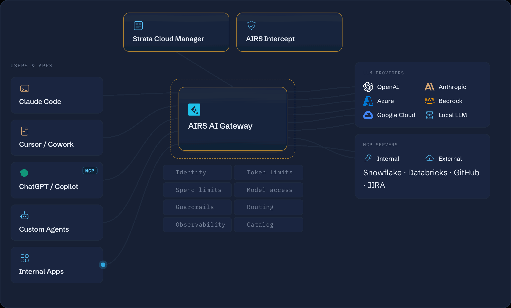

AI Gateway
A single control point for every model and agent call leaving the enterprise.

Explore the AI Gateway architecture — how traffic to and from AI services is inspected, governed, and secured.
A single control point for every model and agent call leaving the enterprise.

Explore the AI Gateway architecture — how traffic to and from AI services is inspected, governed, and secured.